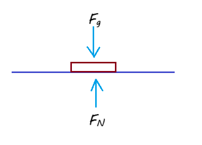
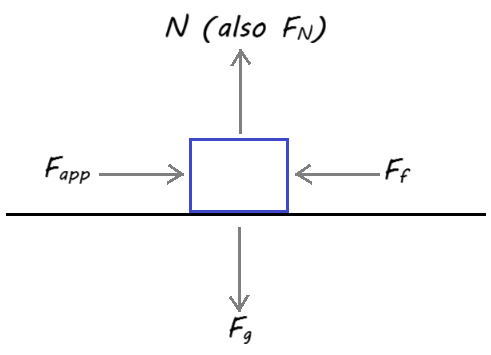

4.5 Free-Body Diagrams
A free-body diagram (FBD) is a simplified drawing used to show all the forces acting on a single object. It helps us analyze forces and predict motion using Newton’s laws.
Key Concept:
A free-body diagram isolates an object and shows only the forces acting on it, represented by arrows.
Steps to Draw a Free-Body Diagram
- Identify the object of interest and isolate it from its surroundings.
- Draw a simple box or dot to represent the object.
- Identify all forces acting on the object (gravity, normal, friction, applied force, tension, etc.).
- Represent each force as an arrow pointing in the correct direction. The length of the arrow represents the magnitude of the force.
- Label each force clearly with its name or symbol.
Example: A Book on a Table
Consider a book resting on a table. There are two main forces acting on it:
- Weight (\(F_g\)): The force of gravity pulling the book downward.
- Normal force (\(F_N\)): The upward force exerted by the table supporting the book.
In this case, the two forces are balanced, so there is no acceleration.
Common Forces in Free-Body Diagrams
- Weight (\(F_g\)): Force of gravity acting downward. Calculated using \(F_g = m \cdot g\), where \(g = 9.8 \, \mathrm{m/s^2}\).
- Normal Force (\(F_N\)): Support force exerted by a surface, acting perpendicular to the surface.
- Friction Force (\(F_f\)): Opposes the motion of an object, acting along the surface.
- Applied Force (\(F_\text{applied}\)): A push or pull exerted on an object by a person or another object.
- Tension Force (\(F_T\)): Force transmitted through a rope, string, or cable when pulled tight.
Horizontal Force vs. Friction (Resistant Force)
When a horizontal force is applied to an object on a surface, the object tends to move in the direction of the applied force. A frictional (resistant) force acts opposite to the direction of motion and reduces the net force available to accelerate the object.
Key ideas:

- Applied (push) force: \(F_{\text{app}}\) — acts in the direction you push.
- Frictional force: \(F_f\) — acts opposite the motion (or attempted motion).
- Normal force: \(N\) — acts upward from the surface; for a horizontal surface \(N = mg\) (if no other vertical forces).
- Net (resultant) horizontal force: \(F_{\text{net}} = F_{\text{app}} - F_f\).
- Using Newton's 2nd law: \(F_{\text{net}} = m a \Rightarrow a = \dfrac{F_{\text{app}} - F_f}{m}\).
Example: Pulling a Sled
A child pulls a sled with a rope at an angle. The free-body diagram will include:
- Weight (\(F_g\)) acting downward.
- Normal force (\(F_N\)) acting upward.
- Tension force (\(F_T\)) from the rope, acting at an angle.
- Friction force (\(F_f\)) opposing the sled’s motion.
Practice Problems
- Draw a free-body diagram of a skydiver falling at constant velocity.
- A car is parked on a level road. Identify and draw all the forces acting on it.
- Draw a free-body diagram of a ball being thrown upward into the air.
- A crate is being pushed across a rough floor. Include all forces acting on it.
- A person hangs motionless from a rope. Identify and draw the forces acting on the person.